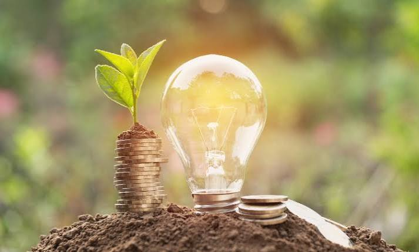
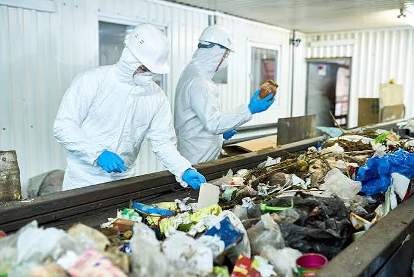

QUE ES EL RECICLAJE
El reciclaje es el proceso mediante el cual los materiales desechados son recolectados, clasificados y transformados para convertirlos nuevamente en materia prima o en productos utiles,
esto como una medida ante el creciente derroche de este material, ya que mayoría de los plásticos que consumimos sólo satisfacen un uso, por lo que se convierten en un problema medioambiental grave.
Se estima que los plásticos de un solo uso representan el 50% de todos los que se producen cada año. Por lo anterior, se calcula que 8 millones de toneladas de plástico llegan a los océanos cada año, por lo que se proyecta que en 2050 habrá más plásticos que peces en el océano.
Debido a lo anterior es necesario una alternativa para reducir la contaminación actual y esto se puede lograr con el recicle.En lugar de terminar en un relleno sanitario, objetos como botellas de plastico, latas de aluminio, papel y carton reciben una segunda vida util, cerrando el ciclo de consumo.
VER LAS 3R
AHORRO DE ENERGIA
Fabricar productos con material reciclado consume hasta un 70 por ciento menos de energia.

ECONOMIA CIRCULAR
Transforma los residuos en nuevos recursos para reducir la extraccion de materias virgenes.
ETAPAS DEL RECICLAJE
SEPARACION EN ORIGEN
Consiste en clasificar los desechos desde el hogar o la escuela segun su composicion antes de desecharlos.
ACOPIO Y TRANSPORTE
Los materiales limpios y secos se reunen en centros de transferencia para ser llevados a plantas procesadoras.
TRANSFORMACION INDUSTRIAL
Los residuos se trituran, funden o procesan para fabricar nuevos envases, cuadernos, textiles o mobiliario.